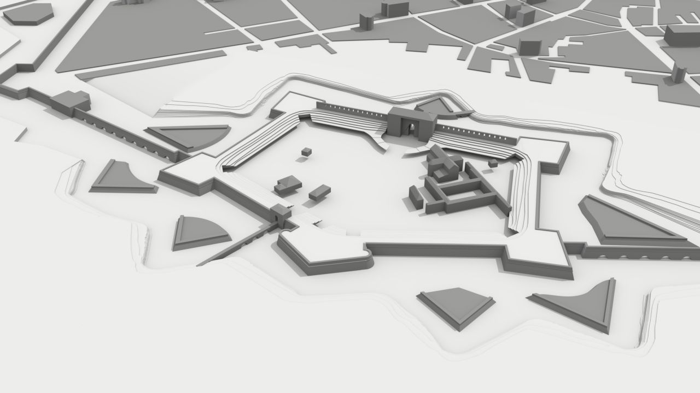

Introduction¶
This documentation describes in details how the Potree basic viewer was customised in order to develop a dedicated web platform for the interactive exploration of the digital twin of the Farnese Castle located in Piacenza (Italy).
A working example of this project can be found on the Politecnico di Milano DICA LabMGF website.
Project Context¶
The project is the result of surveys conducted between 2021 and 2022. The context in which it was designed and developed was a series of in situ laboratories for the course Tecniche di rilievo e modellazione 3D per l’architettura (EN: Topographic survey and 3D modeling for architecture) from the Architectural Design curriculum offered in the Piacenza campus of Politecnico di Milano. Additional data collection, processing and historiographic investigation were conducted in the framework of the Bachelor thesis Riscoprire il gigante sommerso - Rilievo, indagine storica e ricostruzione digitale del Castello di Pierluigi Farnese by Michele Dondi and Clara Rivieri. The implementation of the 3D web interactive platform was carried out by Federica Gaspari, Federico Barbieri and Francesco Ioli from the Geodetic and Photogrammetric Laboratory of Politecnico di Milano.
Farnese Castle¶
The geometric reconstruction and digital representation has been applied for the case study of the Farnese Castle. This pentagonal plan structure commissioned by Duke Pier Luigi Farnese in the XVI century is in the southern part of the city of Piacenza (Adorni B., 1889). Today it is the site of the Polo di Mantenimento Pesante Nord (former Military Arsenal).
The area consists in a surface of approximately 10 hectars. As a result of a process of dismantling portions of the castle during the XVIII century, only 3 of the original 5 ramparts are now visible together with one of the curtain walls. Also, only two rampart indoor areas are accessible, containing an exhibition with documents and artifacts related to the history of Piacenza.
Acknowledgement¶
[TEXT]